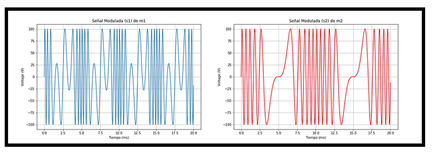
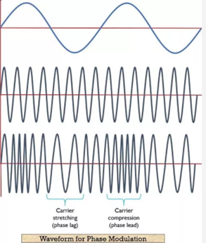
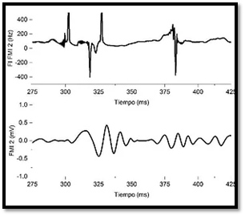
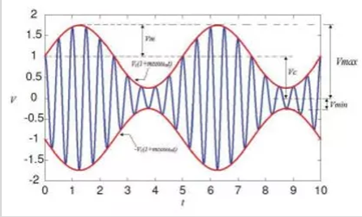
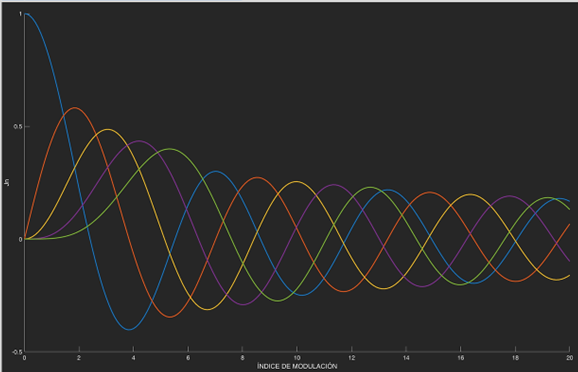
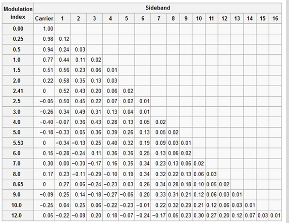

Comunicación Analógica
Página Web
Objetivo: Controlar y analizar las definiciones con respecto a la modulación y demodulación de fase y frecuencia

Introducción
En los siguientes organizadores gráficos, se propone un recorrido por el extenso mundo de las comunicaciones, pretendiendo ser, una suma de conocimiento para estudiantes y docentes. Su propósito es constituirse como un documento pedagógico, con carácter general y universal, para el desarrollo de conocimientos futuros, los cuales pueden ser profundizados en otros libros de texto. Como aporte interesante se presentan los apéndices de problemas resueltos y propuestos. Apéndices que han incluido problemas sencillos pero didácticos, que conducen más a la reflexión que la aclaratoria en el apartado de ejercicios. (Romero, 2013)
MODULACIÓN POR FRECUENCIA ANALÓGICA FM
Características
• El primer sistema operativo de comunicación de radio de FM fue desarrollado con éxito por el mayor Edwin H. Armstrong en 1936, con un receptor superheterodino (amplificador de RF que utiliza el proceso de mezcla de frecuencias o heterodinación para convertir las señales de Rx en una frecuencia intermedia fija).[1]
• FM fue elegida como la norma de modulación para las transmisiones radiofónicas de alta fidelidad.
• Transmite en un canal de la banda de 88 a 108 MHz
• Transmite la onda sonora mediante variaciones en su frecuencia (velocidad), mientras que la amplitud permanece constante.
• Conserva las características originales de los sonidos y elimina las interferencias que pueden causar estática: tormentas eléctricas, ruidos ambientales o el funcionamiento de otras fuentes eléctricas o electrónicas.[2]
• Apenas le afectan las interferencias y descargas estáticas.
• FM fue elegida como la norma de modulación para las transmisiones radiofónicas de alta fidelidad.
• Transmite en un canal de la banda de 88 a 108 MHz
• Transmite la onda sonora mediante variaciones en su frecuencia (velocidad), mientras que la amplitud permanece constante.
• Conserva las características originales de los sonidos y elimina las interferencias que pueden causar estática: tormentas eléctricas, ruidos ambientales o el funcionamiento de otras fuentes eléctricas o electrónicas.[2]
• Apenas le afectan las interferencias y descargas estáticas.
Desventajas
• Utiliza ondas muy cortas y muy direccionales cuya propagación se interrumpe con cualquier obstáculo (edificios altos, montañas).
• Sus ondas poseen un alcance muy limitado, lo que las convierte en el sistema ideal para emisoras de carácter local por su gran fidelidad en la transmisión de la música y el lenguaje hablado.[1]
• La propagación de la señal de frecuencia modulada debe ser en línea de vista.
• Electrónica más compleja que otras modulaciones analógicas.
• Gran ancho de banda requerido, a que este método de modulación produce un gran número de bandas laterales a ambos lados de la frecuencia fundamental de la portadora teniéndose entre éstas una separación igual a la frecuencia de la señal modulante.[5]
• Sus ondas poseen un alcance muy limitado, lo que las convierte en el sistema ideal para emisoras de carácter local por su gran fidelidad en la transmisión de la música y el lenguaje hablado.[1]
• La propagación de la señal de frecuencia modulada debe ser en línea de vista.
• Electrónica más compleja que otras modulaciones analógicas.
• Gran ancho de banda requerido, a que este método de modulación produce un gran número de bandas laterales a ambos lados de la frecuencia fundamental de la portadora teniéndose entre éstas una separación igual a la frecuencia de la señal modulante.[5]
Ventajas
• Mayor inmunidad al ruido
• Inmune a descargas eléctricas
• Señales de bajas frecuencias
• Mayor calidad de reproducción.
• Fidelidad mejorada.
• En la transmisión de señales FM se puede intercambiar de forma efectiva potencia por ancho de banda de transmisión o lo que es lo mismo se puede mejorar la relación S/N en el receptor sin necesidad de aumentar la potencia de transmisión.[3]
• Mejor uso de la potencia. La modulación FM es inmune a las no linealidades. Las no linealidades en este caso generan ondas moduladas con portadoras múltiplos de la original.[4]
• Permite diseñar multiplicadores de frecuencia (generadores de ondas FM con portadora múltiplo de la original) a partir de sencillos elementos no lineales.
• Inmune a descargas eléctricas
• Señales de bajas frecuencias
• Mayor calidad de reproducción.
• Fidelidad mejorada.
• En la transmisión de señales FM se puede intercambiar de forma efectiva potencia por ancho de banda de transmisión o lo que es lo mismo se puede mejorar la relación S/N en el receptor sin necesidad de aumentar la potencia de transmisión.[3]
• Mejor uso de la potencia. La modulación FM es inmune a las no linealidades. Las no linealidades en este caso generan ondas moduladas con portadoras múltiplos de la original.[4]
• Permite diseñar multiplicadores de frecuencia (generadores de ondas FM con portadora múltiplo de la original) a partir de sencillos elementos no lineales.
Aplicaciones
• Principales aplicaciones radio difusión y TV
• Utilizadas como sub-portadoras de sonido, en micrófonos inalámbricos y como en ayuda en navegación.
• En el sistema de televisión en color SECAM (Color secuencial con memoria) donde modula la información de color en FM.
• En los sistemas de vídeo analógicos, incluyendo VHS, para registrar la luminancia (blanco y negro) de la señal de video.
• En las frecuencias de audio se las utiliza para sintetizar sonido.
• Sistemas de control: una importante alternativa a los rayos infrarrojos en multitud de situaciones cotidianas, desde puertas de garaje hasta teclados y ratones inalámbricos. La modulación angular se usa en forma extensa para radioemisión comercial, televisión y transmisión de sonido, radioteléfonos, radio celulares y sistema de comunicaciones por microondas y satélites.[6]
• Utilizadas como sub-portadoras de sonido, en micrófonos inalámbricos y como en ayuda en navegación.
• En el sistema de televisión en color SECAM (Color secuencial con memoria) donde modula la información de color en FM.
• En los sistemas de vídeo analógicos, incluyendo VHS, para registrar la luminancia (blanco y negro) de la señal de video.
• En las frecuencias de audio se las utiliza para sintetizar sonido.
• Sistemas de control: una importante alternativa a los rayos infrarrojos en multitud de situaciones cotidianas, desde puertas de garaje hasta teclados y ratones inalámbricos. La modulación angular se usa en forma extensa para radioemisión comercial, televisión y transmisión de sonido, radioteléfonos, radio celulares y sistema de comunicaciones por microondas y satélites.[6]
MODULACIÓN ANGULAR

La modulación angular se produce siempre que se varia en Angulo de fase, θ, de una onda senoidal, con respecto al tiempo. Una onda con modulación angular se describe matemáticamente como sigue:
m(t) = Vc Cos(wct + θ(t))
m(t) = onda con modulación angular
Vc = amplitud máxima de portadora (volts)
wc =frecuencia de la portadora en radianes, es decir, velocidad angular en radianes por segundo
θ(t) = desviación instantánea de fase (radianes)
m(t) = onda con modulación angular
Vc = amplitud máxima de portadora (volts)
wc =frecuencia de la portadora en radianes, es decir, velocidad angular en radianes por segundo
θ(t) = desviación instantánea de fase (radianes)
Si la frecuencia de la portadora se hace variar directamente de acuerdo con la señal moduladora se obtiene la FM. Si se varia la fase de la portadora en forma directa por la señal moduladora, resulta la PM. Por consiguiente, la FM directa es PM indirecta, y la PM directa es FM indirecta.
PARÁMETROS DE MODULACIÓN
Desviación instantánea de fase
Cambio instantáneo en la fase de la portadora, en un instante de tiempo, e indica cuanto está cambiando la fase de la portadora con respecto a su fase de referencia.
Desviación instantánea de fase = θ(t) rad
Desviación instantánea de fase = θ(t) rad
Fase instantánea
Es la fase precisa de la portadora, en un instante de tiempo.
Fase instantánea = wct + θ(t) rad
Donde:
wct = fase de referencia de la portadora (radianes)=2π(rad/ciclo)
fo =frecuencia de portadora (hertz)
θ(t) =desviación instantánea de fase (radianes).
Fase instantánea = wct + θ(t) rad
Donde:
wct = fase de referencia de la portadora (radianes)=2π(rad/ciclo)
fo =frecuencia de portadora (hertz)
θ(t) =desviación instantánea de fase (radianes).
Desviación de frecuencia instantánea
Es el cambio instantáneo en la frecuencia de la portadora, se define como la primera derivada con respecto al tiempo de la desviación de fase instantánea, en un instante de tiempo, e indica cuanto está cambiando la fase de la portadora con respecto a su fase de referencia.[3]
Desviación instantánea de frecuencia =θ'(t) rad/sec
Frecuencia instantánea
Es la frecuencia precisa de la portadora, en un instante de tiempo. Es la primera derivada con respecto al tiempo de la fase instantánea.[4]
Fc = θ'(t)/2π Hz

Sensibilidad a la desviación
Para una señal moduladora Vm(t) la modulación de fase y la de frecuencia son:
Modulación de Fase: θ(t) = KVm(t)
Modulación de Frecuencia: θ'(t) = K1Vm(t)
K y K1; constantes y son las sensibilidades a la desviación son las funciones de transferencia de salida en función de la entrada de los moduladores de fase y frecuencia.
Modulación de Frecuencia: θ'(t) = K1Vm(t)
K y K1; constantes y son las sensibilidades a la desviación son las funciones de transferencia de salida en función de la entrada de los moduladores de fase y frecuencia.
Constante sensibilidades
La modulación de fase es la primera integral de la modulación de frecuencia. Por consiguiente:
Modulación de fase:
m(t) = Vc Cos(wct + θ(t))
Para modulacion de frecuencia:
m(t) = Vc Cos(wot + KVm Cos(Wmt))
m(t) = Vc Cos(wct + θ(t))
Para modulacion de frecuencia:
m(t) = Vc Cos(wot + KVm Cos(Wmt))
Indice de modulación
Llamada también máxima desviación de fase y es directamente proporcional a la amplitud de la señal modulante e inversamente proporcional a su frecuencia.
El indice de modulación para FM es:
m = K1Vm/Wm = Δf/fm
Donde:
m = índice de modulación (adimensional)
K1 = sensibilidad a la desviación (radianes por segundo por volt, o radianes por volt)
Vm = amplitud máxima de la señal moduladorado (volts)
Wm = frecuencia en radianes (radianes por segundo)
m = K1Vm/Wm = Δf/fm
Donde:
m = índice de modulación (adimensional)
K1 = sensibilidad a la desviación (radianes por segundo por volt, o radianes por volt)
Vm = amplitud máxima de la señal moduladorado (volts)
Wm = frecuencia en radianes (radianes por segundo)
Desviación de frecuencia
Es el cambio de frecuencia que ocurre en la portadora, cuando actúa sobre él una señal modulante.
Δf = K1Vm

Porcentaje de Modulación
El porcentaje de modulación es tan sólo Ia relación de desviación de frecuencia producida realmente, entre la desviación máxima de frecuencia permitida, expresada en forma porcentual. La ecuación correspondiente es
% Modulación = Δf(max)/Δf(real)
MODULADORES Y DEMODULADORES DE FASE Y DE FRECUENCIA
Un modulador de fose es un circuito en el que se hace variar Ia portadora de tal modo que su fase instantánea es proporcional a Ia señal moduladora.[7]
Un modulador de FM que está precedido por un diferenciador produce una onda de salida en la que la desviación de fase es proporcional a la señal moduladora y equivale, en consecuencia, a un modulador de fase. Son posibles algunas otras equivalencias interesantes.
• Modulador de PM = diferenciador seguido por un modulador de FM.
• Demodulador de PM = demodulador de FM seguido por un integrador.
• Modulador de FM = integrador seguido por un modulador de PM.
• Demodulador de FM = demodulador de PM seguido de un diferenciador.
• Demodulador de PM = demodulador de FM seguido por un integrador.
• Modulador de FM = integrador seguido por un modulador de PM.
• Demodulador de FM = demodulador de PM seguido de un diferenciador.
ANÁLISIS EN FRECUENCIA DE LAS ONDAS CON MODULACIÓN ANGULAR
Amplitud de las frecuencias laterales


Descarga el documento
Materia capitulo IV
Bibliografía
[1] M. V. Sabando, Transformada de Fourier y telecomunicaciones, Universidad Nacional del Sur, Argentina, 2014. [En línea]. Disponible en: http://lcr.uns.edu.ar/fvc/NotasDeAplicacion/FVCSabandoMariaVirginia.pdf
[2] Tecnológico Nacional de México, Fundamentos de Telecomunicaciones - Unidad III: Modulación, Zacatecas, México. [En línea]. Disponible en: https://enlinea.zacatecas.tecnm.mx/pluginfile.php/24436/mod_resource/content/1/Unidad%20III.pdf
[3] Radios Libres, Métodos de Modulación Digital, 2020. [En línea]. Disponible en: https://radioslibres.net/wpcontent/uploads/media/uploads/analfatecnicos/15.MetodosModulacionDigital.pdf
[4] M. V. Sabando, Transformada de Fourier y telecomunicaciones,Universidad Nacional del Sur, Argentina, 2014. [En línea]. Disponible en: http://lcr.uns.edu.ar/fvc/NotasDeAplicacion/FVCSabandoMariaVirginia.pdf
[2] Tecnológico Nacional de México, Fundamentos de Telecomunicaciones - Unidad III: Modulación, Zacatecas, México. [En línea]. Disponible en: https://enlinea.zacatecas.tecnm.mx/pluginfile.php/24436/mod_resource/content/1/Unidad%20III.pdf
[3] Radios Libres, Métodos de Modulación Digital, 2020. [En línea]. Disponible en: https://radioslibres.net/wpcontent/uploads/media/uploads/analfatecnicos/15.MetodosModulacionDigital.pdf
[4] M. V. Sabando, Transformada de Fourier y telecomunicaciones,Universidad Nacional del Sur, Argentina, 2014. [En línea]. Disponible en: http://lcr.uns.edu.ar/fvc/NotasDeAplicacion/FVCSabandoMariaVirginia.pdf
INFOTMACIÒN

Integrantes:
•Karina Yucailla
• Sebastian Fiallos
• Christian Guachanboza
• Gutemberg Ramos
• Bryan Salazar
• Sebastian Fiallos
• Christian Guachanboza
• Gutemberg Ramos
• Bryan Salazar
Docente:
• Ing. juan Pablo Pallo